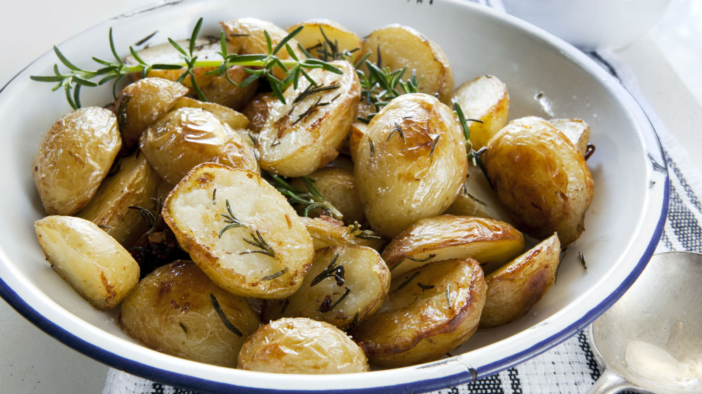
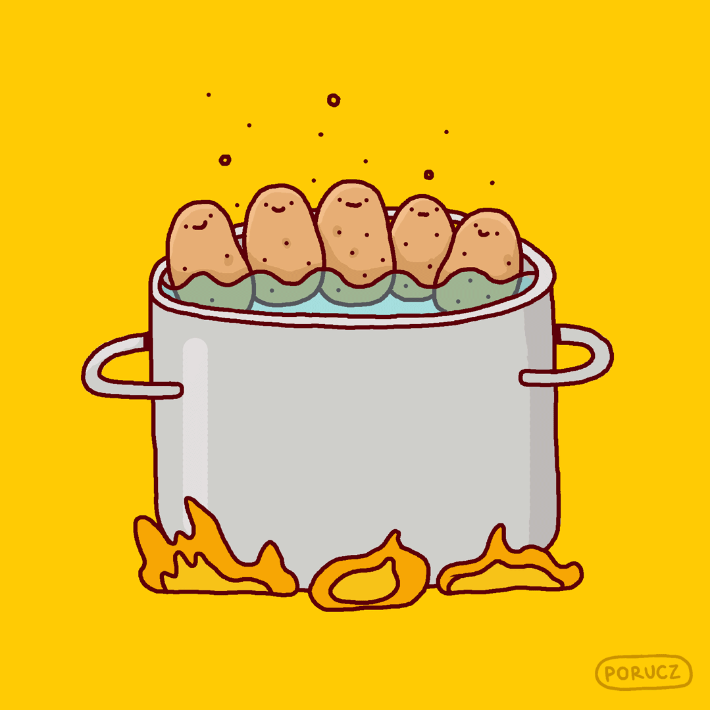
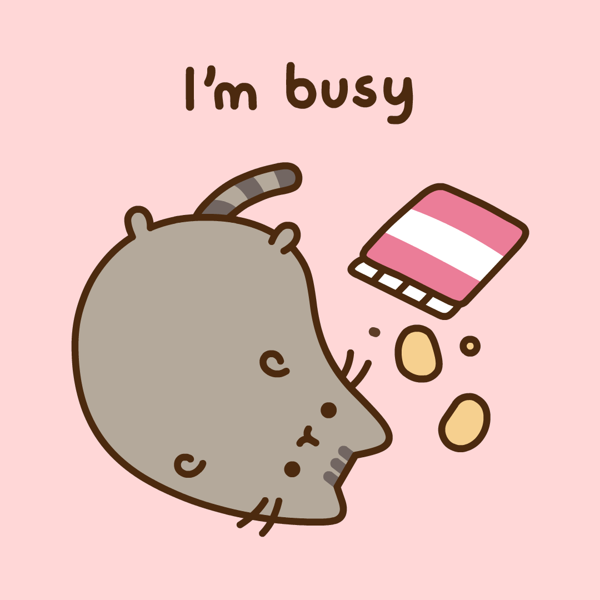
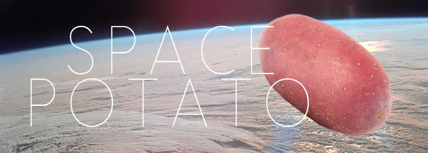

Roast Potatos
Protip, use ghee instead of butter
Who doesn't like roast potatoes? Click here for the full recipe

Creamy Mashed Potatos
For when you are tired of that dollar store crap
Seriously, they may be cheap, but they are a crime against potato enthusiasts everywhere. Mashed potatoes are easy to make, and the ingredients are cheap to procure. Make it your fallback when bae eats all the steak

Party Time!
Spice up your party with these cool potato based appetizers! Now Vegan friendly so you won't have to listen to that guy ruining your party with another lecture on how we're literally killing this planet by eating meat

Fun Fact: Potatoes were the first vegetable to be grown in space
The taste was out of this world!
I kid, i kid. But seriously, since Potatoes provide almost all of the nutrients humans need to survive, even protein, NASA has been working towards producing Quantum Tubers™ to feed astronauts on the ISS and hopefully on missions to Mars. The Martian was closer to reality than you think, here's the article to learn how they are doing it and why they chose the name Quantum Tubers™
`